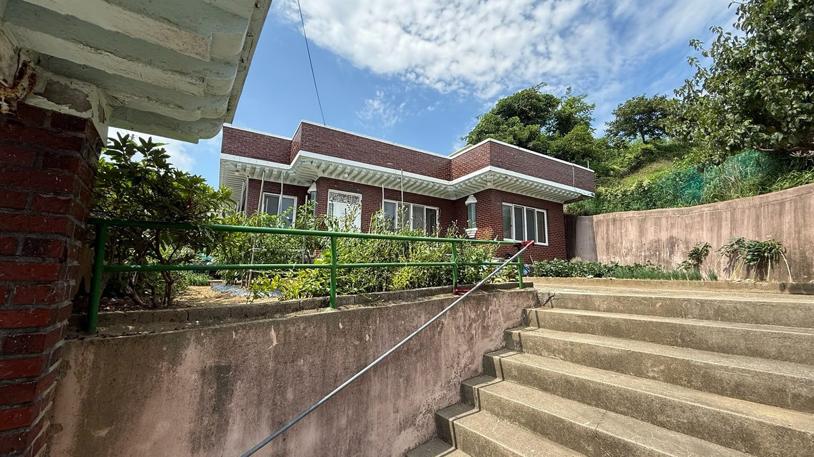
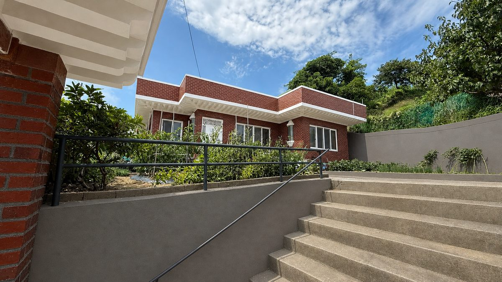
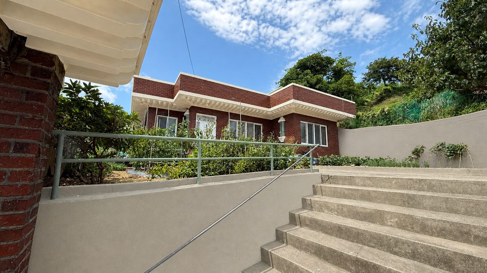
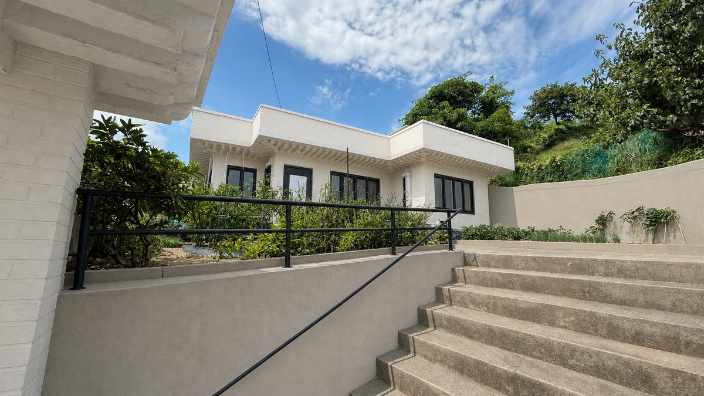

2026-11-20 등록
적벽돌 단독주택 — 1·2·3안
벽돌을 살릴지, 덮을지 / 난간·옹벽을 어디까지 어둡게 할지로 인상이 거의 다 갈립니다. 같은 집을 세 가지로 뽑아 봤습니다.
배색 원리 — 외벽은 면적이 곧 무게. 넓은 면은 밝게, 난간·차양 같은 선은 어둡게 잡으면 건물이 또렷해집니다.


41. 1안 — 차콜 난간 + 웜그레이 옹벽 (벽돌 그대로)
적벽돌의 붉은 기운은 살리고, 선(난간·옹벽)만 어둡게 눌러 무게중심을 잡은 안
노루 · 삼화 최근접 코드ΔE00 색차 · 작을수록 가까움 · 0000A = 삼화 컬러칩 번호 · 사진에서 추출한 색이라 실물 대조 필수
- 차콜 (난간·옹벽)난간·옹벽노루DB 9035 Volcano ClusterΔE 1.0삼화0012E(SH S 7502-Y)Pepper GrayΔE 3.3
- 웜그레이 (옹벽)우측 옹벽·계단실 벽노루NU 3097 WildenssΔE 2.0삼화0012C(SH S 5502-Y)Whistle GrayΔE 2.4
- 기존 적벽돌벽돌 — 손대지 않음노루DB 9017 Plum SyrupΔE 1.3삼화0143E(SH S 7010-Y90R)Cocoa BeanΔE 5.0
면적 배분 (삼화 칩 / 노루 코드)
차콜 0012E · DB 9035 20% · 웜그레이 0012C · NU 3097 45% · 기존 적벽돌 0143E · DB 9017 35%
붉은 벽돌은 그대로 두고 난간·옹벽만 차콜로 내리면, 벽돌이 오히려 밝게 보이고 건물 선이 또렷해진다. 옆 옹벽을 웜그레이로 한 톤 밝게 두면 차콜이 너무 무겁게 가라앉지 않는다.
차콜은 무광이 때가 덜 보이지만 여름 표면 온도가 올라간다. 옹벽·난간은 수성 아크릴(외부용) 또는 우레탄으로 마감하고, 손잡이는 마찰이 많으니 2회 이상 도장.

42. 2안 — 세이지 난간 + 크림 옹벽
붉은 벽돌과 보색에 가까운 세이지를 얇게 얹어 차분하게 정리한 안
노루 · 삼화 최근접 코드ΔE00 색차 · 작을수록 가까움 · 0000A = 삼화 컬러칩 번호 · 사진에서 추출한 색이라 실물 대조 필수
- 세이지 (난간)난간·핸드레일노루MD 5111 KiwiΔE 1.5삼화0160D(SH S 5030-G30Y)Sesame LeafΔE 5.6
- 크림 (옹벽)전면 옹벽노루NU 4075 Oak FlatsΔE 1.4삼화0039D(SH S 4005-Y20R)Eddy GrayΔE 1.8
- 기존 적벽돌벽돌 — 손대지 않음노루DB 9017 Plum SyrupΔE 1.3삼화0143E(SH S 7010-Y90R)Cocoa BeanΔE 5.0
면적 배분 (삼화 칩 / 노루 코드)
세이지 0160D · MD 5111 15% · 크림 0039D · NU 4075 50% · 기존 적벽돌 0143E · DB 9017 35%
적벽돌(붉은 기)과 세이지(녹회색)는 색상환에서 마주 보는 쪽이라 서로를 죽이지 않고 차분해진다. 난간처럼 가는 선에만 넣어야 튀지 않고, 넓은 옹벽은 크림으로 밝게 두어 조경·화분이 살아난다.
세이지는 광량에 따라 회색으로 죽어 보이기 쉽다. ΔE 5 이상이면 조색이 필요하니, 매장 컬러칩으로 반드시 실물 확인 후 발주한다.

43. 3안 — 크림 브릭 도장 + 블랙 창틀·난간
벽돌 결은 남기고 색을 덮는 안 — 가장 현대적으로 보이는 대신 공정이 가장 많다
노루 · 삼화 최근접 코드ΔE00 색차 · 작을수록 가까움 · 0000A = 삼화 컬러칩 번호 · 사진에서 추출한 색이라 실물 대조 필수
- 크림 브릭 (도장)벽돌 전체노루MC 2017 Latte GrayΔE 0.6삼화0001D(SH S 1500-N)Soothing GrayΔE 1.2
- 블랙 (창틀·난간)창틀·난간·우편함노루MC 2028 Evening ShadowΔE 11.7삼화0003E(SH S 8000-N)Nimbus GrayΔE 10.1
- 기존 적벽돌비교용 — 도장 전노루DB 9017 Plum SyrupΔE 1.3삼화0143E(SH S 7010-Y90R)Cocoa BeanΔE 5.0
면적 배분 (삼화 칩 / 노루 코드)
크림 브릭 0001D · MC 2017 70% · 블랙 0003E · MC 2028 30%
벽돌을 크림으로 덮으면 건물이 한 덩어리로 정리되고, 창틀·난간을 블랙으로 두면 선이 살아난다. 밝은 벽 + 검은 창은 요즘 신축 주택에서 가장 많이 쓰는 조합이다.
벽돌 도장은 줄눈까지 덮는 피막형이므로 표면 처리(파워세척·프라이머)와 2회 이상 도장이 필수다. 흡수가 큰 벽돌은 1회차에서 색이 얼룩지기 쉬워, 자재 소요량을 1안·2안보다 1.5배로 잡는다.